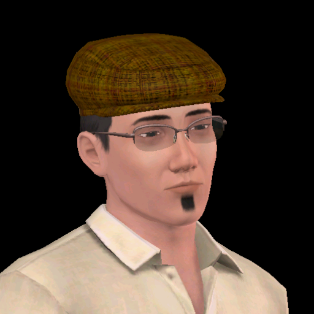
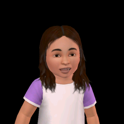
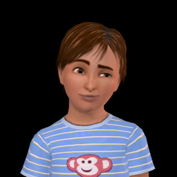

Meet The Cho Family

Alisha Cho is a pre-made Sim from Hidden Springs in her adult stage, 14 days away from becoming an elder. She lives with her husband, Simon, her adopted son, Davy, and daughter, Minzi. She is living in a large house with a playground located in the luxurious town of Hidden Springs, although she used to live in Bridgeport. She moved away in order to relax and shop, and also meet some celebrities.
Simon Cho is a pre-made adult Sim who lives in Hidden Springs with his family: wife, Alisha Cho, adopted son, Davy, and young daughter, Minzi. He previously lived in Bridgeport but came to Hidden Springs to relax from his successful hard work as a Film director, however his bio implies he is getting away from his objective since he has started a Business career, where he works at level 6 as a Division Manager. He has 4 points in painting and 5 in writing skills. In his inventory, he carries a laptop and two other books. He is best friends with his beloved children

Minzi Cho is a pre-made toddler who lives in a large house in Hidden Springs. She is the daughter of Alisha and Simon Cho, who are her best friends, she also has an adoptive brother, Davy, whom with she is best friends. Her family are originally from Bridgeport, but they decided to move away to Hidden Springs and enjoy the sun there. She is a very clever toddler and loves playing the xylophone, she is also said to enchant the adults when she smiles
